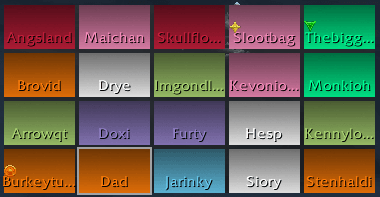

Restoration Druid
About the author
This guide is written by Lavathing, a prominent theorycrafter for Restoration Druids and raider in Hard in the Paint. He is the owner and primary contributor for Healcraft.net, a healing theorycraft website. Lavathing has been raiding as a tree since Wrath of the Lich King.
Spec Overview
Restoration Druids specialize in healing over time and raid healing abilities. With most abilities being instant cast, Restoration Druids are also great for high movement encounters. We excel at blanketing the raid with healing and providing sustained throughput. Additionally, due to a variety of viable talent choices, Restoration Druids are able to adapt to various situations and encounters.
Links
• Tweet Lavathing!
• Join the Druid IRC chat at #Moonglade!
Changelog
• 7/1: Fully updated for patch 6.2!
• 5/6: Removed Talent Synergies page to work on it, coming back soon.
• 4/29: Expanded some Boss Guide and Talent explanations.
• 4/2: Cleaned up rotation tab
• 4/2: A guide has sprouted
Rotation
Note: healing doesn’t follow a strict rotation and this is more of a guideline.
1) Use a direct heal to apply the Harmony buff. Maintain this buff 100% of the time.
2) Keep Lifebloom and a Rejuvenation on the active tank at all times.
3) Keep Wild Mushroom down. Usually keeping it in melee is a safe bet. However, if the ranged are taking significant raid damage and are stacked, you can place it in ranged.
4) If you have the Soul of the Forest talent, use Swiftmend off cooldown followed by a Wild Growth. You can save this combo for a few seconds if you know there is upcoming raid damage.
5) Consume Omen of Clarity buffs with Regrowth casts. If no one is low, use this on your current Lifebloom target to refresh its duration.
6) Use Rejuvenation as a filler ability on players that are, or are about to, take damage.
7) If you have the Dream of Cenarius talent, use Wrath as a filler during low periods of damage.
Cooldowns
Tranquility – Our signature three minute cooldown ability. Tranquility is arguably one of the best healing throughput cooldowns in the game, and can be used to heal through dangerous parts of an encounter. This ability will almost always be assigned by your raid or heal leader. If not, use this during periods of heavy raid damage.
Nature’s Swiftness – Often overlooked and sometimes not considered a “cooldown”, Nature’s Swiftness is an essential part of our toolkit. This is especially true with our 2 piece set bonus. This bonus gives our Nature’s Swiftness three charges. Always use this with Regrowth for maximum throughput. Try to use this ability nearly off cooldown on players that are low health.
Ironbark – This external tank cooldown is unique due to its very low cooldown of one minute. While other cooldowns have much larger damage reduction, Ironbark fills the niche of an external that can be used very frequently. Additionally, at level 100, Ironbark targets take 20% more healing from your HoTs.
Incarnation / Heart of the Wild / Nature’s Vigil – All cooldowns tied to talent choices. Check out the talents tab on the left for more information!
Talents Cheat Sheet
The cheat sheet below is a very generalized talent build suggestion. Due to the situational nature of healing, you’ll likely change talents nearly every encounter. For more detail, read the talent explanations below or click the Boss Guides tab to the left.
Level 15: Displacer Beast
Level 30: Ysera’s Gift
Level 45: Typhoon
Level 60: Soul of the Forest
Level 75: Ursol’s Vortex
Level 90: Heart of the Wild
Level 100: Germination
Talents Advanced
Level 15: Feline Swiftness, Displacer Beast, Wild Charge
Feline Swiftness
Provides a passive movement speed buff.
Displacer Beast
Provides a blink and short duration sprint. This is your go-to choice, the utility of a blink is too good to pass up on for most encounters.
Wild Charge
Provides various utility abilities related to movement; very rare and situational use.
Level 30: Ysera’s Gift, Renewal, Cenarion Ward
Ysera’s Gift
Provides a passive self-heal that can also heal allies when you are at full health. This is the strongest talent for most situations.
Renewal
Provides a moderate self heal on a 2 minute cooldown. The weakest of the three talents.
Cenarion Ward
Provides an activated heal over time ability when the target takes damage. This talent is capable of similar throughput as Ysera’s Gift, but requires mana and a GCD every 30 seconds. Due to this, this talent is only useful on very high tank damage encounters.
Level 45: Faerie Swarm, Mass Entanglement, Typhoon
Faerie Swarm
A single target slow, situational use.
Mass Entanglement
An area of effect root effect. However, since the roots are broken on damage, this ability is very situational.
Typhoon
A knock back and daze effect. Situational use and usually the go-to talent for most encounters.
Level 60: Soul of the Forest, Incarnation: Tree of Life, Force of Nature
Soul of the Forest
A short cooldown buff to various healing abilities. Almost always paired with Wild Growth for maximum throughput. Provides the most sustained throughput of this tier’s talents, thus being our go-to talent choice.
Incarnation: Tree of Life
A long cooldown that buffs various healing abilities and provides a 30% reduction in mana cost for Rejuvenation. This ability adds one extra Wild Growth effect per cast, makes Regrowth instant cast, and increases the healing done by Rejuvenation by 50%. Incarnation is a situational talent choice for fights with staggered damage phases; especially those that are 1, 1.5, or 3 minutes apart. Additionally, a good talent for low levels of spirit due to the mana savings on Rejuvenation.
Force of Nature
The weakest of the three talents. Provides single target smart healing by summoning treant pets.
Level 75: Incapacitating Roar, Ursol’s Vortex, Mighty Bash
Incapacitating Roar
A small area of effect ability that incapacitates targets for 3 seconds. Situational use.
Ursol’s Vortex
A unique ability that holds enemies in one place by pulling them to the center of the vortex when they first try to escape. Additionally, provides a slow effect on enemies in the vortex. Units that are immune to grip effects will not be pulled by the vortex, but they will be slowed.
Mighty Bash
Provides a long duration (5 seconds) single target stun. Situational use.
Level 90: Heart of the Wild, Dream of Cenarius, Nature’s Vigil
Heart of the Wild
A long cooldown ability that dramatically increases healing and damage done. For encounters with tight enrage mechanics or priority targets, this ability can be used to do a moderate amount of burst DPS. However, most of the time we use the strong 45 second healing buff paired with Tranquility for massive amounts of healing. This talent is an excellent choice on any encounter where Tranquility plays a major role, and thus is our go-to talent choice for this tier.
Dream of Cenarius
A passive increase to Wrath‘s damage and converts 150% of its damage into smart healing. This talent is a good choice on long encounters with periods of low damage. With this talent, use Wrath as your filler ability rather than Rejuvenation during low raid damage.
Nature’s Vigil
A short cooldown ability that causes your single target healing abilities to splash to nearby allies, healing them for 20% of the initial heal. Additionally, causes single target healing to do 20% of its healing as damage to nearby enemies. We usually take this talent when Heart of the Wild or Dream of Cenarius are not a good option. Meaning, on encounters where the large 1-2 time boost to DPS and/or healing (primarily for Tranquility) is not needed/possible and you don’t have time to frequently cast Wrath. Due to these constraints, this talent is only very situationally taken.
Level 100: Moment of Clarity, Germination, Rampant Growth
Moment of Clarity
The weakest talent of the tier. Changes Omen of Clarity into Moment of Clarity, making Regrowth cost zero mana for 7 seconds. However, casting Regrowth back-to-back for 7 seconds is almost always a throughput loss. Additionally, you have no control over when the buff activates, meaning there will be times where you will not fully use the buff.
Germination
The strongest of the talents. Increases the duration of Rejuvenation by 3 seconds and allows targets to have two Rejuvenation buffs (from one druid) on them at the same time. The second Rejuvenation usually has high overhealing, but can be very useful on targets expected to take large amounts of damage.
Rampant Growth
A very situational talent and is required to be paired with Soul of the Forest. Allows you to activate the Soul of the Forest buff every other GCD for a large increase to throughput. However, this playstyle is extremely clunky and requires massive amounts of mana regeneration to be sustainable. Due to this, only consider this talent on very short encounters or those with a mana-return mechanic.
Glyphs
Major
Glyph of Regrowth
Guarantees that your Regrowth casts will always be a critical strike. A solid throughput gain, especially when paired with our 2 piece set bonus.
Glyph of Wild Growth
Adds an additional heal over time effect to each Wild Growth cast. Do not use this glyph in 5-man content.
Minor
Glyph of Sprouting Mushroom
Allows you to place your Wild Mushroom at a ground location rather than only under a targeted player.
Glyph of Grace
Situational damage reduction from falling.
Situational
Glyph of Stampeding Roar
Increases the range of Stampeding Roar and allows you to remain in caster form while casting it. This is usually our third major glyph.
Glyph of Rebirth
Causes our Rebirth to revive dead allies with full health. Only take this if you are your group’s primary battle resurrector.
Glyph of Enchanted Bark
Our Barkskin ability also makes us immune to interrupt and silence effects. Potentially useful on encounters with frequent interrupts.
Glyph of Nature’s Cure
Allows us to dispel two times in a row, but increases the cooldown of dispel charges by 4 seconds. Very situational, only take on encounters that require infrequent double-dispelling.
Glyph of Healing Touch
Healing Touch casts reduce the cooldown of Nature’s Swiftness by 2 seconds. Situational; useful if we are casting Healing Touch frequently.
Glyph of Rejuvenation
Reduces the cast time of Healing Touch by 10% when we have at least 3 Rejuvenation effects on the raid. Situational; useful if tank healing or casting Healing Touch frequently.
Stats
Intellect >> Spirit (Until Comfortable) > Haste => Mastery > Multistrike > Critical Strike = Versatility
Intellect is a primary stat that provides 1 Spell Power (SP) per point. Spell Power increases how much your spells heal for.
Spirit increases your combat mana regen. Once you feel comfortable with your mana, you can trade spirit for other stats. We recommend spirit levels around 1,500 (including average value from trinket effects) for most talent builds and encounters.
Haste increases casting speed and makes our heal over time abilities have more ticks that occur more frequently.
Mastery increases all of our healing, assuming you maintain 100% uptime on Harmony.
Multistrike causes abilities to have a chance to hit a second and a third time, each dealing 30% of the initial damage.
Critical Strike increases the chance to critically hit with abilities and increases the chance direct heals cause Living Seed.
Versatility increases all damage and healing done, and decreases all damage taken.
Stat Math
The following information shows you how much secondary stat rating you need for a 1% increase:
1% increase in haste ~ 90 rating (Use HealerCalcs for an exact value for your character)
1% increase in mastery = 88 rating
1% increase in multistrike = 66 rating
1% increase in critical strike = 110 rating
1% increase in healing from versatility = 130 rating // 1% decrease in damage taken from versatility = 260 rating
Enchants
Rings: Enchant Ring – Gift of Haste
Cloak: Enchant Cloak – Gift of Haste
Neck: Enchant Neck – Gift of Haste
Weapon: Enchant Weapon – Mark of Shadowmoon. You can switch to Enchant Weapon – Mark of Warsong if you have too much spirit.
Gems: Immaculate Haste Taladite
Consumables
Food: Buttered Sturgeon
Potion: Draenic Channeled Mana Potion for maximum regeneration. If you cannot channel for at least 7 seconds, use Draenic Mana Potion. If you do not need mana, use Draenic Intellect Potion.
Flask: Greater Draenic Intellect Flask
Gear
The gear below is an absolute best in slot list. Meaning, this is the best possible gear you can attain once you have cleared all the mythic encounters.
| Slot | Item | Source |
|---|---|---|
| Helmet | Oathclaw Helm | Kormrok |
| Necklace | Locket of Unholy Reconstitution | Mannoroth |
| Shoulder | Oathclaw Mantle | Xhul’horac |
| Cloak | Drape of Beckoned Souls | Socrethar the Eternal |
| Chest | Oathclaw Vestment | Mannoroth |
| Bracer | Manacles of the Multitudes | Fel Lord Zakuun |
| Gloves | Felfinger Runegloves | Archimonde |
| Waist | Waistwrap of Banishment | Archimonde |
| Legs | Oathclaw Leggings | Gorefiend |
| Boots | Oppressor’s Merciless Treads | Tyrant Velhari |
| Ring | Pompous Ceremonial Ring | Tyrant Velhari |
| Weapon | Edict of Argus | Archimonde |
| Trinket | Demonic Phylactery | Socrethar the Eternal |
| Trinket* | Flickering Felspark | Hellfire Assault |
*Both Seed of Creation (Archimonde) and Unstable Felshadow Emulsion (Xhul’horac) can be used in this slot situationally.
- 2 Piece Set Bonus – Fairly strong set bonus. Adds a sizeable increase to the throughput of Lifebloom when tanks are taking high enough damage to avoid overhealing.
- 4 Piece Set Bonus – Fairly strong set bonus. Allows us to have Lifeblooms on two targets at once. Not only does this help our tank healing capabilities, but allows us to have a Lifebloom on the active tank and a raid member with a debuff or damage over time effect if there is only one active tank.
Gear
The gear below is an absolute best in slot list. Meaning, this is the best possible gear you can attain once you have cleared all the mythic encounters. This also assumes that spirit is slightly devalued since fights are shorter and have less damage once on farm. For progression, you may consider replacing some of the jewelry listed below with similar pieces that contain spirit.
| Slot | Item | Source |
|---|---|---|
| Helmet | Living Wood Headpiece | Kromog |
| Necklace | Gruul’s Lip Ring | Gruul |
| Shoulder | Flamebender’s Shoulderguards | Flamebender |
| Cloak | Runefrenzy Greatcloak | Kromog |
| Chest | Living Wood Raiment | Flamebender |
| Bracer | Squire’s Electroplated Bracers | Thogar |
| Gloves | Living Wood Grips | Iron Maidens |
| Waist | Girdle of Unconquered Glory | Hans’gar and Franzok |
| Legs | Living Wood Legguards | Blast Furnace |
| Boots | Treads of the Dark Hunt | Iron Maidens |
| Ring | Uk’urogg’s Corrupted Seal | Iron Maidens |
| Weapon | Inferno-Flame Staff | Gruul |
| Trinket* | Darmac’s Unstable Talisman | Beastlord Darmac |
| Trinket** | Auto-Repairing Autoclave | Blackhand |
*If you need more spirit, you can replace this with Ironspike Chew Toy from Beastlord Darmac.
**If you need less spirit and more throughput, you can replace this with Everburning Candle.
A spreadsheet for trinket values can be found here.
- 2 Piece Set Bonus – Our two piece set bonus is fairly strong. It makes our Nature’s Swiftness cooldown work on the next three spells, rather than just one. Always consume this buff with Regrowth for maximum throughput. Three subsequent buffed and mana-free Regrowths can be very strong when used on players taking heavy damage.
- 4 Piece Set Bonus – A very weak set bonus. We do not go for our 4 piece for the set bonus, we use these pieces for their stats. This means if you get warforged off-tier pieces, feel free to replace the 4 piece set bonus. If you do have this set bonus, just ignore it. Attempting to cast two Healing Touches for a 25% cheaper Wild Growth results in a higher mana cost than just casting Wild Growth.
Hellfire Citadel Boss Guide
The suggested talent builds for the fights below are meant to provide the best assistance to the raid team during progression. These are not the only viable talents, and various talent combinations work for many of these fights. Also, remember that the talents are selected to maximize the potential for success on progression, not for parsing.
Finally, the majority of the guides below are intended for the Heroic version of the encounters. They will be updated for Mythic mode once progression is completed.

Hellfire Assault
Talents
Soul of the Forest and Heart of the Wild
Strategy
This fight has low and intermittent damage if your raid keeps on top of the adds and has the correct kill priority. Make sure you have a Soul of the Forest buffed Wild Growth when Gorebound Felcasters metamorph into Gorebound Terrors and they begin to cast Felfire Volley. Additionally, use your Tranquility and Heart of the Wild when there are multiple Gorebound Terrors alive. Displacer Beast is useful for avoiding Shockwave and Felfire Crushers.

Iron Reaver
Talents
Soul of the Forest and Heart of the Wild
Strategy
Pounding is the main source of high raid damage during this encounter. During this ability, place your Wild Mushroom in melee and use Heart of the Wild and Tranquility where assigned. Displacer Beast is very valuable for quickly dodging Barrage, Blitz, and crossing paths of Immolation. If your raid is having issues keeping up with killing Firebombs, Heart of the Wild cleaving (with Moonfire and Wrath) is very effective, although a substantial throughput loss.

Kormrok
Talents
Soul of the Forest and Heart of the Wild
Strategy
Pound and Grasping Hands are the primary sources of damage during this encounter. Try to use Heart of the Wild when Pound and Grasping Hands are close enough together as to cover both with the healing buff. Additionally, use Tranquility during one of these abilities. Barkskin and Bear Form are helpful for soaking Explosive Runes. Use Stampeding Roar for Explosive Burst on the tank to help the raid move away from that player. Otherwise, Stampeding Roar is useful during Fel Outpouring phases to assist moving from the waves.

Hellfire High Council
Talents
Soul of the Forest and Heart of the Wild
Glyphs
Strategy
Make sure to track all of the Mark of the Necromancer debuffs (1, 2, 3, 4, 5). Focus heal players with yellow and red versions of the debuff. Consider dispelling players with the red version of the debuff if Reap is not happening soon. If Reap is happening soon, do not dispel the debuff. Use Tranquility during Wailing Horror phases. Save Heart of the Wild for the final Wailing Horror phase, as there will be more damage once the bosses have been pushed past 30% health. Use Ironbark and single target healing on targets with Fel Rage fixate.

Kilrogg Deadeye
Talents
Soul of the Forest and Heart of the Wild
Strategy
Use Tranquility during Death Throes casts. Save Heart of the Wild for a late Death Throes cast, as its damage increases throughout the fight. If you are assigned for Vision of Death, keep all three players alive until you reach 20 stacks of the Undying Salvation debuff. Genesis has some use here to heal through the burst damage. Once you leave the Vision of Death, use your Cleansing Aura to clear Fel Corruption from players (primarily the tanks and melee). Finally, use Displacer Beast when you have Heart Seeker to spawn the Globule as far back from the boss as possible.

Gorefiend
Talents
Soul of the Forest and Heart of the Wild
Situational Trinket
Unstable Felshadow Emulsion – This trinket has situational use on this boss due to the damage amplification buff during his long Feast of Souls phase. Additionally, most DPS will be using Bloodlust/Heroism and cooldowns during this phase. Therefore, the increased DPS during the encounter’s highest damage taken phase plays perfectly to Unstable Felshadow Emulsion’s niche.
Strategy
While outside, remain spread and use Displacer Beast to move Touch of Doom out of the raid. Additionally, Displacer Beast can be used to move to players afflicted with Shared Fate (if you are chained with them). When inside of Gorefiend’s stomach, use Nature’s Swiftness and Regrowth to quickly heal Tortured Essences before they can reach the center of the room. Remember to track your Digest debuff and leave the Stomach if it is about to expire. Additionally, immediately leave the stomach if Feast of Souls begins.

Shadow-Lord Iskar
Talents
Soul of the Forest and Heart of the Wild
Strategy
Use Tranquility and Heart of the Wild during transition phases (when the boss flies away) and try to line it up with Focused Blast. Additionally, dispel Fel Bomb quickly if you have the Eye of Anzu. Use a Soul of the Forest buffed Wild Growth after each Fel Chakram combo. Additionally, make sure to heal up players with Phantasmal Wounds quickly to remove the debuff. Finally, use Stampeding Roar during Phantasmal Winds to assist raid members.

Socrethar the Eternal
Talents
Soul of the Forest and Heart of the Wild
Strategy
During the Construct phase, use Displacer Beast to quickly move Felblaze Charge out of the group. Additionally, run forward into Volatile Fel Orbs that are fixated on you before they reach the group. During the main boss phase, use Heart of the Wild and Tranquility during Apocalypse and when there are many players afflicted with Gift of the Man’ari. Make sure to keep the Haunting Soul that is fixated on you pathing through fire left by Felblaze Charge.

Fel Lord Zakuun
Talents
Soul of the Forest and Heart of the Wild
Strategy
Make sure to track all of the Befouled debuffs (1, 2, 3). Apply both Rejuvenations and a Lifebloom (if you have T18 4pc) to targets with Befouled to quickly heal off the debuff. Additionally, if you have Befouled, make sure to move away from other players as you explode when the debuff is removed. Use Heart of the Wild and Tranquility during the Disarmed phase, as he will be dealing significantly higher damage during this phase. Finally, move to a corner of the room (away from any pillars) when you get Seed of Destruction.

Xhul’horac
Talents
Soul of the Forest and Heart of the Wild
Strategy
Make sure to save Heart of the Wild for the final phase, as his damage is drastically increased during this time. Move to the assigned sides for Fel and Void when you are debuffed with Fel Surge and Void Surge respectively. Avoid taking Fel damage when you are Voidtouched, and avoid taking Void damage when you are Feltouched. Use Displacer Beast to quickly move to correct sides of the room.

Tyrant Velhari
Talents
Soul of the Forest and Heart of the Wild
Strategy
Make sure to track Touch of Harm. Use both Rejuvenations and Lifebloom (if you have the T18 4pc) to heal off the Touch of Harm as quickly as possible. Also, feel free to dispel the Touch of Harm if the player afflicted with it drops below 50% health. Displacer Beast can be useful in phase one, as the blink movement does not count as normal movement, and thus you do not take any damage from Aura of Oppression. Use Tranquility during Edict of Condemnation. Save Heart of the Wild for an Edict of Ccondemnation during the final phase for maximum throughput. Additionally, using Heart of the Wild during the final phase to DPS will result is massive DPS output due to HotW’s damage buff stacking with Aura of Malice.

Mannoroth
Talents
Soul of the Forest and Heart of the Wild
Strategy
Prepare to use Ironbark on tanks during the Glaive Combo. Additionally, Stampeding Roar is useful during Mannoroth’s Gaze to allow the raid to reach players with the fear. Tranquility is also useful during Mannoroth’s Gaze as it is the only raid damage during the first half of the encounter (assuming all other mechanics are dodged correctly). Displacer Beast is extremely valuable for both Felseeker dodging and countering the pushback from Shadowforce. Use Heart of the Wild and your final Tranquility during an Empowered Felseeker in the final phase.

Archimonde
Talents
Soul of the Forest and Heart of the Wild
Strategy
Stampeding Roar and Displacer Beast are very useful for dodging Allure of Flames during the entire encounter. Use your first Heart of the Wild and Tranquility during the Desecrate (Pillar) phase as you will get a second use of Heart of the Wild again during the final phase. After the Desecrate phase, use Tranquility during Shackled Torments to help heal through the chain breaks. In the final phase, use Stampeding Roar to help the raid dodge Rain of Chaos.
Blackrock Foundry
The suggested talent builds for the fights below are meant to provide the best assistance to the raid team during progression. These are not the only viable talents, and various talent combinations work for many of these fights. Also, remember that the talents are selected to maximize the potential for success on progression, not for parsing.

Oregorger
Talents
Soul of the Forest and Heart of the Wild
Strategy
- Use Soul of the Forest on each Acid Torrent.
- Use Heart of the Wild during one of the non-rolling phases for an increase to throughput.
- Use Ironbark on tanks before Acid Torrent to reduce raid damage.
- Use Stampeding Roar during the rolling phase to assist raid mobility.
- Use Displacer Beast and Barkskin for fire lines on mythic difficulty.

Hans’gar & Franzok
Talents
Soul of the Forest and Heart of the Wild
Glyphs
Strategy
- Use Soul of the Forest for Aftershock and Shattered Vertebrae damage.
- Use Heart of the Wild with your Tranquility, ideally during a period of high damage and movement. For example, the Body Slam during the non-smart stamper phase.
- Use Ironbark on a tank during Crippling Suplex.
- Place your Wild Mushroom in melee during stand still phases.

Beastlord Darmac
Talents
Incarnation and Dream of Cenarius/Heart of the Wild
Glyphs
Strategy
- We take Incarnation primarily for the final 20% phase which is very heal intensive.
- If your guild is having issues healing the final 20%, take Heart of the Wild as well.
- If not, take Dream of Cenarius for a filler for the first 80% of the encounter.
- Other than Tantrum there is almost no damage until 20% boss HP. Due to this, Dream of Cenarius is great for saving mana and providing decent damage over the course of this long encounter.
- Use Soothe on the boss and adds when they are buffed by Savage Howl.
- Use Tranquility during a Tantrum.

Gruul
Talents
Soul of the Forest and Heart of the Wild
Strategy
- Use Soul of the Forest for every other Inferno Slice to heal up that group.
- Use Heart of the Wild to damage the boss on the pull. If your team is not having any issues with the enrage, use Heart of the Wild with your Tranquility.
- Use Barkskin on every other Inferno Slice on your group.
- Use Displacer Beast to get out of Overhead Smash.
- Use Stampeding Roar to help players spread for Petrifying Slam.

Flamebender Ka’graz
Talents
Incarnation and Dream of Cenarius
Strategy
- Use Incarnation during a Summon Cinder Wolves phase to heal fixated players.
- Other than the Summon Cinder Wolves and Firestorm phases there is only very minor raid damage. Use Dream of Cenarius during this time.
- Use Ironbark on players fixated by the Cinder Wolves.
- Place your Wild Mushroom in melee to heal Molten Torrents.
- Use Tranquility and an intellect potion during a Firestorm.

Operator Thogar
Talents
Soul of the Forest and Heart of the Wild
Strategy
- Use Soul of the Forest for frequent damage from Man-at-Arms, Burning, and other abilities.
- Use Heart of the Wild with Tranquility when a Man-at-Arms is alive and/or when the raid has high stacks of Burning.
- Use Displacer Beast to avoid Moving Trains, get away with Delayed Siege Bombs, and cross fire lines or Prototype Pulse Grenades.
- Use Stampeding Roar to help the raid cross fire lines.
- Use Barkskin when a Man-at-Arms is alive or if you have high stacks of Burning.

Blast Furnace
Talents
Soul of the Forest and Heart of the Wild/Dream of Cenarius
Situational: Typhoon and Might Bash to assist with add control.
Strategy
- If you have enough spirit to sustain mana until the end of the encounter, choose Heart of the Wild for strong healing boosts.
- If you are undergeared and/or limited on spirit pieces, choose Dream of Cenarius for a mana-free filler ability.
- Use Typhoon and Might Bash to interrupt Repair and keep a low Furnace Engineer next to the Heat Regulator.
- Use Soul of the Forest to heal through frequent Blast and Volatile Fire damage.
- Use Tranquility to heal through Blast and Volatile Fire damage.
- Place your Wild Mushroom in melee.
- Use Displacer Beast and Stampeding Roar to help get Bombs to the Heat Regulator.
- Use Ironbark on tanks taking high damage.
- Use Barkskin for Blast and Volatile Fire damage.
- Use Displacer Beast to get away with Melt and Rupture.

Kromog
Talents
Soul of the Forest and Heart of the Wild
Strategy
- Use a Soul of the Forest buffed Wild Growth on each Stone Breath.
- Use Heart of the Wild to help DPS Stone Pillars – Moonfire each then Wrath spam the last one to spawn.
- Use Barkskin during Stone Breath.
- Use Tranquility during Stone Breath.
- Place your Wild Mushroom under melee to help heal Stone Breath and Slam.
- Use Displacer Beast to dodge Rippling Smash.
- Use Stampeding Roar to help the raid move between Stone Pillars after Call of the Mountain.

Iron Maidens
Talents
Soul of the Forest and Heart of the Wild/Dream of Cenarius
Situational: Mass Entanglement and Ursol’s Vortex if assigned to Admiral Gar’an’s boat.
Strategy
- Choose Heart of the Wild if more healing is needed sub-20% and/or you need to help with boat DPS.
- Choose Dream of Cenarius if sub-20% healing is fine and you need a filler for the first 80%.
- Use Displacer Beast to get away with Bloodsoaked Heartseekers.
- Use Tranquility during Sanguine Strikes.
- Use Ironbark on tanks taking Sanguine Strikes to reduce raid damage.
- Place your Wild Mushroom in either the melee or ranged stack points (decision dependent on strategy).

Blackhand
Talents
Soul of the Forest and Heart of the Wild
Glyphs
Strategy
- Use Heart of the Wild during Demolitions.
- Use Tranquility during Demolitions.
- Use Stampeding Roar for raid mobility during Demolitions.
- Use Ironbark on the active tank or on melee DPS without strong defensives for Demolitions.
- Use Displacer Beast for Marked for Death positioning.
- Place your HoTs on players before they go up to a balcony to assist in survivability.
- Use Soul of the Forest for the frequent raid damage.
- Use Heart of the Wild in phase three to assist in healing the raid.
- Use Displacer Beast in phase three immediately after getting hit by Impaled to avoid the knock-back.
- Use Barkskin whenever hit by Impaled.
AddOns
Raid Frames

The primary addon for any healer should be their raid frames. There are several good raid frame addons available. The differences come down to personal preference. I recommend one of the following:
Grid
Grid2
VuhDo
Healbot Continued
Easily one of the best addons in the game. Allows you to do almost anything, ranging from alerting you of a debuff to tracking raid wide cooldowns. Most guilds require this addons so players can import custom made strings for particular bosses.
Macros
Basic Mouseover Macro
Allows you to cast a spell on an ally by hovering over their raid frame and hitting the associated keybind. Replace SPELL with a spell name.
#showtooltip SPELL
/cast [@mouseover,help,nodead] SPELL
Nature’s Swiftness and Regrowth
You almost always consume your Nature’s Swiftness buff with Regrowths. Use this mouseover macro to cast an instant Regrowth.
#showtooltip Regrowth
/cast Nature's Swiftness
/cast [@mouseover,help,nodead] Regrowth
WeakAura Strings
Harmony Tracker – Appears when Harmony has fallen off.
Lifebloom Tracker
Wild Mushroom Tracker
Stampeding Roar Tracker
Druid CD Bar (Originally created by Affinity)